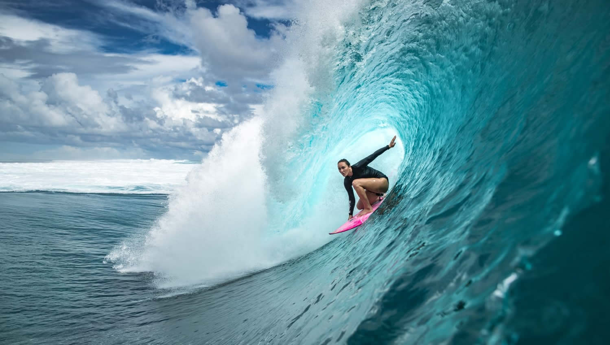

El surf es un deporte acuático que consiste en realizar amplios giros y maniobras aprovechando la fuerza de una ola, sobre una tabla.
Historia
Se tiene constancia de la presencia del surf desde hace más de 500 años en las islas de Polinesia. El explorador inglés James Cook llegó a Hawái en 1778, donde conoció el Bodysurfing (similar a este deporte pero sin tabla) y el Bodyboard. Pero es en el norte de Perú, donde se encuentran las primeras evidencias de personas practicando dicho deporte. Estas se encuentran en uno de los huacos (cerámicas preincaicas) donde se muestra a un hombre sobre algo similar a un trozo de madera deslizándose sobre las olas.1234 Esto sitúa los orígenes de este deporte en América del Sur, aunque serían los polinesios los que siglos más tarde llevarían el gusto por el surf hasta lugares como Hawái. Tiempo después de la llegada de Cook, las culturas autóctonas hawaianas fueron reprimidas y el surf cayó en decadencia. Fue a mediados del siglo XX cuando el surf se recuperó, ya que con la llegada de turistas y militares estadounidenses a Hawái junto con la fama del hawaiano olímpico Duke Kahanamoku, el surf comenzó a popularizarse en las costas de California y Australia, extendiéndose luego a otros países. Huaco chimú representando un caballito de totora.
Por aquel entonces, las tablas se tallaban en madera maciza, lo cual facilitaba la práctica del surf dada la sencillez de su fabricación. Poco a poco fue evolucionando hasta convertirse en un deporte completo, creándose acrobacias, movimientos, diversos diseños y materiales que permitieran masificar el surf, volviéndolo multidisciplinario y polivalente. A partir de los años 60 el surf se popularizó en muchos continentes. En los últimos años, los destinos más solicitados por los viajeros que lo practican están Australia y el Sudeste Asiático. También cuenta con una gran importancia en Latinoamérica, especialmente Perú, Chile, México o Brasil, donde existen una gran cantidad de playas aptas para este deporte.